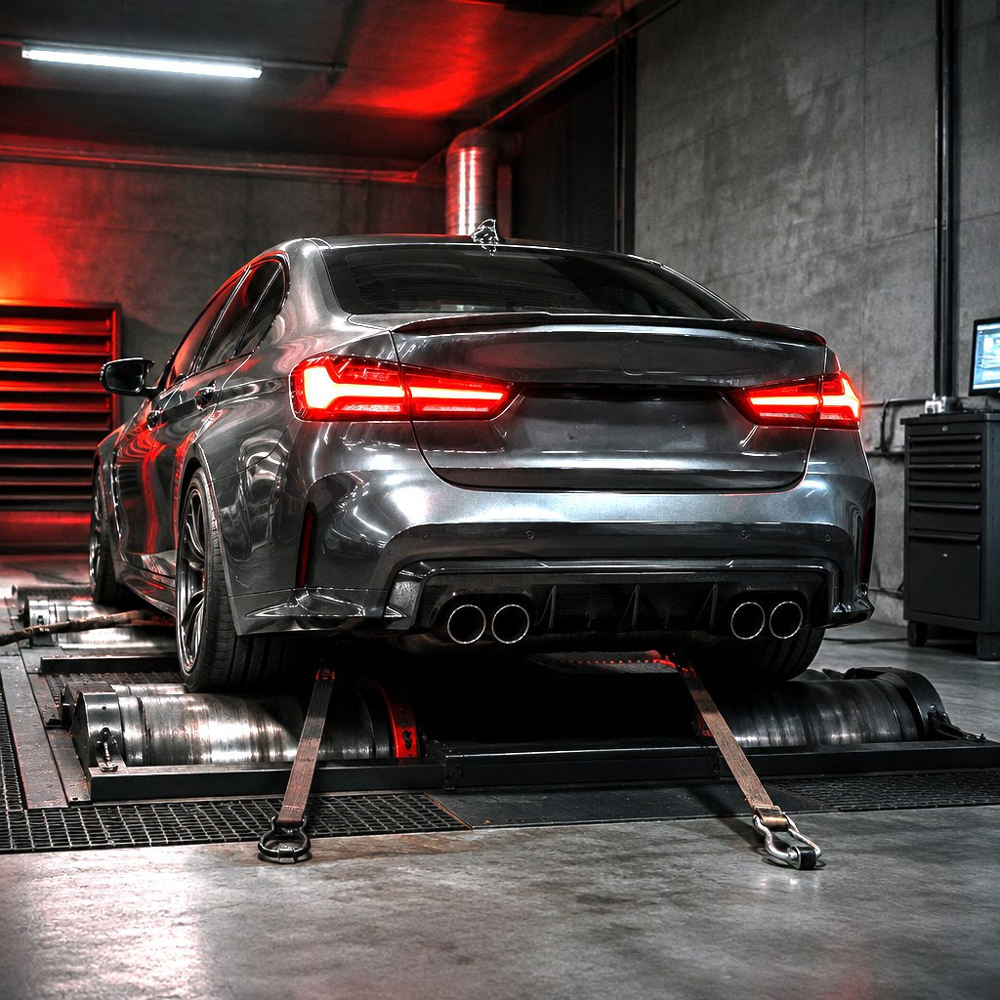

Stage 1, 2 и 3 без мифов
Разница между уровнями — не «цифры в прошивке», а требования к железу. Ниже честно: что нужно каждому Stage, что вы получите и когда следующий уровень бессмысленен.
Чем отличаются уровни
Каждый следующий Stage требует больше железа. Программа пишется под фактический конфиг, а не «по шаблону».
Прошивка без замены железа: меняем топливо, наддув и зажигание в пределах запаса заводских агрегатов.
Нужен выпуск и впуск: downpipe, интеркулер, иногда впуск. Программа пишется под конкретный набор.
Под замену турбины, форсунок, насоса. Индивидуальная калибровка под собранный конфиг.
Как выглядит результат
Форма кривой, а не рекламные проценты: мощность приходит раньше и держится дольше. Конкретные цифры — после замера на вашем авто.
Требования по уровням
Таблица для ориентира: если чего-то нет — Stage выше просто не даст результата.
| Уровень | Что нужно по железу | Что делаем | Кому подходит |
|---|---|---|---|
| Stage 1 | Всё заводское, исправный двигатель | Калибровка топлива, наддува и зажигания в пределах запаса | Тем, кто хочет отклик и тягу без вложений в железо |
| Stage 2 | Downpipe, интеркулер, часто впуск | Программа под фактический выпуск и впуск, корректировка наддува | Тем, кто уже поставил выпуск и хочет реализовать его |
| Stage 3 | Турбина, форсунки, топливный насос | Индивидуальная калибровка под собранный конфиг, контроль температур и смеси | Проектам, где цель — максимум с мотора |
Индивидуальная настройка
Прошивка не обязана быть «как у всех»: поведение машины подстраивается под владельца.
Характер педали
Отклик на газ: мягкий для города или резкий, «злой» — по вашему выбору.
Ограничение скорости
Снятие или корректировка ограничителя, если это предусмотрено вашей задачей.
Поведение на холостых и в пробке
Ровность работы, отсутствие рывков и «клевков» при сбросе газа.
Замер динамики
Разгон до и после прошивки: показываем разницу в цифрах, а не словами.
Где Stage не поможет
Честные границы: иногда прошивка бессмысленна или вредна.
Двигатель не в порядке
Если есть ошибки по смеси, компрессии или турбине, сначала ремонт. Прошивка поверх неисправности добивает мотор.
Блок после 2021 года
Закрытые блоки прошиваются на снятом блоке. Если блок не поддерживается — скажем сразу, а не после оплаты.
Stage выше железа
Stage 2 без выпуска и Stage 3 без турбины не дают заявленного результата: программа ограничена возможностями деталей.
Про уровни
Частые вопросы по Stage.
Технически программа запишется, но вы не получите того, что даёт Stage 2: выпуск остаётся узким местом. Лучше Stage 1 или сначала железо.
Замеряем динамику разгона до и после. Стендовый замер даёт точные цифры мощности — по возможности показываем и его.
Проверка состояния автомобиля, чтение и сохранение заводской прошивки, калибровка, запись, тестовая поездка и замер.
Да, заводская прошивка возвращается из базы AlienTech.
На автоматах и роботах момент растёт, поэтому калибровка коробки часто нужна: обсуждаем при записи.
Не знаете, какой уровень нужен?
Скажите модель, год и что стоит по железу — подскажем без навязывания.